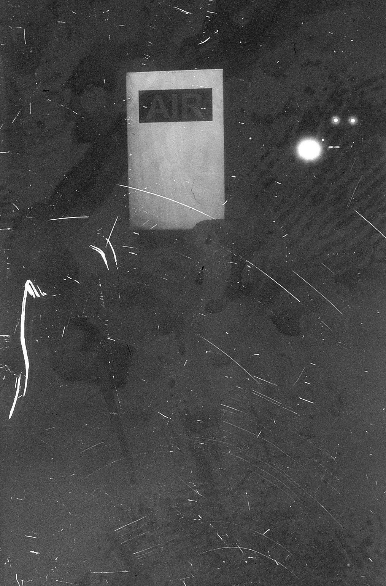

"Air"
35mm Photography // 2019 // Georgetown, Indiana
This was an experiment in emulsion. I'd gotten my hands on a TON of old, still usable Polaroid instant 35mm rolls. Thirty years expired but still a lot of fun for peanuts compared to what that stuff is actually worth. I took a roll of the B&W out in my Nikon F4 just to see what I could do with texture on that stuff. I took this very grungey shot of a gas station air pump, and I'm kind of obsessed with it. More and more I see my work get cleaner, tighter, better composed. That's extremely easy to do once you've spent half your life trying it. What's so much harder to do is make something like this. Clean work can never make me feel like this. A grainy, low DR shot is easy. Just shoot some Delta 3200 and you're done. This isn't that. This is more present, more challenging. I wish I could make more work like this. I miss experimenting like this.